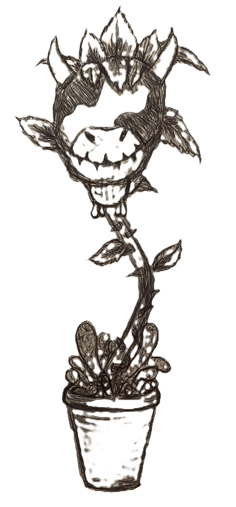

Welcome! My name is Bailey Howell. I am a research scientist trained in computational biology, statistical modeling, and machine learning!
This website is my online commonplace book. In addition to my research projects (PROJECTS) and writing portfolio (PORTFOLIO), it also showcases some of my personal interests, including knitwear design (DESIGNS and WORKSHOP), event planning (BULLETIN), art, and photography.
I made this website using HTML and CSS. If you want to see how I did it check out the INSPIRATIONS tab!